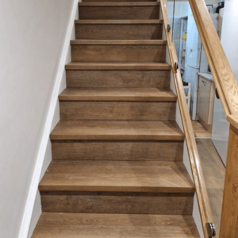
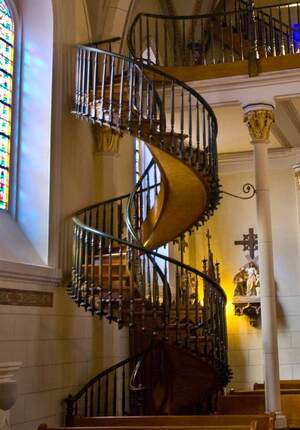

ⲁⲛⲧⲱⲧⲉⲣ B v ⲧⲱⲣⲧⲣ.
(noun male)
construction
staircase


complete
| ⲧⲱⲣⲧⲣ, ⲧⲱⲧⲣ S
ⲧⲱⲧⲉⲣ B ⲧⲱⲗⲧⲉⲗ F |
(noun male)ladder, step, stair, degree of sundial [βαθμος, αναβαθμις, επιβασις, κλιμακτηρ]2346 | Crum: 432a | |||||||
| ⲁⲛⲧⲱⲧⲉⲣ B | (noun male)threshold2347 | ||||||||
12b
411b
431b
439b
411b
ⲧⲱⲗⲧⲉⲗ F v ⲧⲱⲣⲧ (ⲧⲱⲣⲧⲣ).
431b
ⲧⲱⲣⲧ S (Theban) A2 (once) nn m (hierogl tꜣrd) staircase: J 26 9 ⲡⲥⲓⲛⲡⲟⲥⲓⲟⲛ ⲉⲧϩⲓⲡⲧ. ⲉⲧⲛⲡⲓⲧⲛ ⲛⲧⲉⲝⲉⲇⲣⲁ, ib 35 48 ⲛⲧⲉⲣⲃⲱⲕ ⲡⲧ. ϩⲓϩⲟⲩⲛ ⲙⲡⲣⲟ ⲛⲧⲉϫⲏⲣⲉ ϣⲁⲁⲣⲁⲧⲏⲩ, ib 42 23 ⲡⲧ. ⲉϩⲣⲁⲓ, ib 35 27 ⲧⲣⲓ ⲉⲥϩⲁⲡⲧ., JSch 7 19 ⲧⲣⲓ ⲉⲧⲙⲡⲉⲥⲏⲧ ϩⲓⲡⲧ., CO 149 ⲣⲟ ⲛⲁⲩⲑⲉⲛⲧⲏⲥ (cf J 35 33 ⲣⲟ ⲙⲃⲁⲗ), ⲃⲁⲓⲙⲟⲟⲩ, ⲧ. ϣⲱⲡⲉ ⲛⲕⲟⲓⲛⲟⲛ, J 24 127 sim, ST 109 ⲛⲧⲁⲥⲙⲛ ⲡⲁⲧ. ⲟⲙⲟⲕⲗⲏⲣⲟⲥ; v also ⲕⲱⲗϫ (ⲕⲁⲗⲁϫⲧ.); Mani 1 A2 ⲁⲙⲏ ⲛⲧⲉⲙⲁϩⲉ ϩⲛⲛⲓⲁⲛⲉⲧ. ⲉⲧⲟⲩⲁ[ⲃⲉ (cf ? (ϩ)ⲁⲛ-).
ⲧⲱⲣⲧⲣ, ⲧⲱⲧⲣ (Mor 31) S, -ⲧⲉⲣ B, ⲧⲱⲗⲧⲉⲗ F nn m, ladder, step, stair, degree of sundial: 1 Tim 3 13 B (S ϣⲓ), Z 321 S he climbed ϩⲓϫⲛⲟⲩⲧ. βαθμός, Ex 20 26 SB ἀναβαθμίς, Is 38 8 SB, Ac 21 35 SB -μός, Cant 10 S ἐπίβασις; Ez 40 22 SB κλιμακτήρ; P 44 31 S ⲡⲧ. ⲛⲧⲉϭⲗⲟⲟϭⲉ درج السلم; ShHT E 343 S building ϩⲉⲛⲧ. ⲉⲃⲱⲕ ⲉϩⲣⲁⲓ ⲉⲧⲡⲉ ϩⲓⲱⲟⲩ, BMOr 6201 A S ⲡⲧ. ⲛⲕⲟⲩ ϩⲣⲁⲓ ⲉⲧϫⲉⲛⲉⲡⲱⲣ, BMis 79 S ⲉⲓ ⲉⲡⲉⲥⲏⲧ ⲙⲡⲧ. (var Mor 33 14 ϩⲙⲡⲧ.), AM 191 B ⲉⲣ ⲥⲁϧⲣⲏⲓ ⲙⲡⲓⲧ., C 43 47 B fixed on ground ⲙⲫⲣⲏϯ ⲛⲟⲩⲧ. = Mor 39 24 F Mor 41 318 S ⲛⲉⲧ. of St Mark at Alexandria, ib 31 234 S ⲛⲉⲧⲱⲧⲣ (bis) of sanctuary, TEuch 1 7 B sim. ⲁⲛⲧⲱⲧⲉⲣ B nn m, threshold: BM 920 265 ⲡⲓⲁ. معقمة، اسكفة (v Kremer Beitr, in K 157 ﻣ׳ = ⲕⲉϩⲛⲓ, in P 55 12 ﺍﺳ׳ = ⲕⲉⲫⲁⲗⲓⲥ), BMOr 8775 141, Montp 169 do.
439b
ⲧⲱⲧⲣ S, -ⲧⲉⲣ B v ⲧⲱⲣⲧ (ⲧⲱⲣⲧⲣ).
See also:
| view | ϭⲗⲟⲟϭⲉ, ϭⲗⲟϭⲉ SL ⲕⲗⲟⲅⲉ, ⲧⲗⲟⲟϭⲉ, ⲧⲗⲱϭⲉ S ⲧⲗⲁϭⲉ F | (noun female) ladder [κλιμαξ]2562 |
| view | ⲙⲟⲩⲕⲓ B | (noun female) ladder [κλιμαξ]1050 |